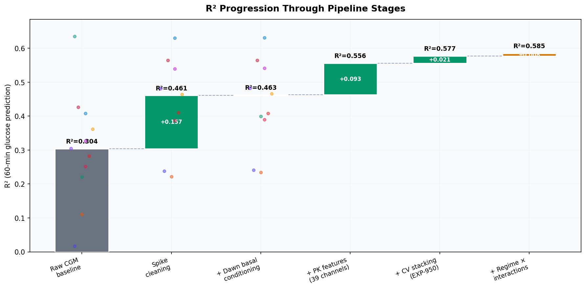
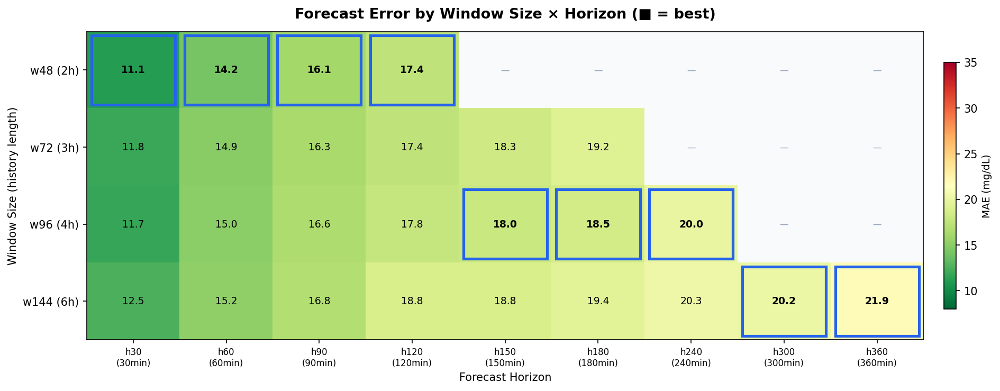
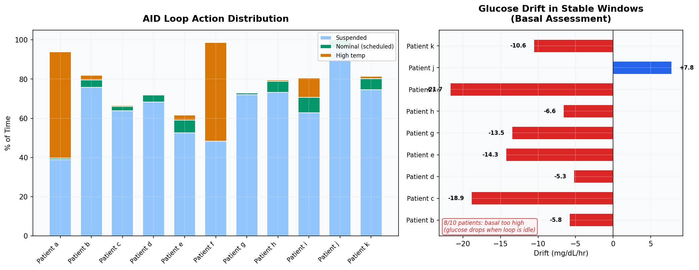
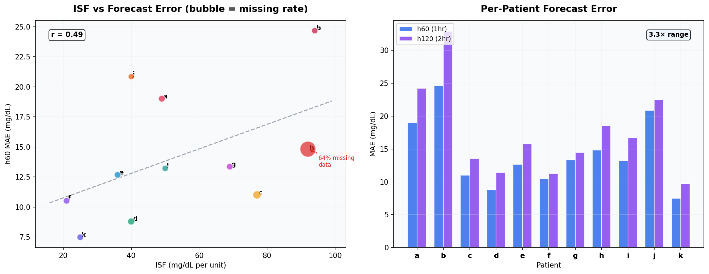
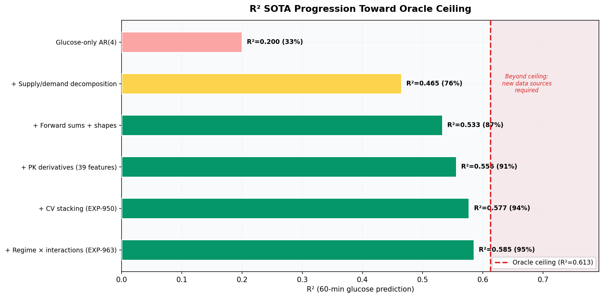

Top 5 Campaign Insights: 1,000+ Experiments in Glucose Forecasting¶
Record
Record as of 2026-04-08. A point-in-time document; it is not kept up to date.
Date: 2026-04-08
Campaign: Metabolic Flux Glucose Prediction (EXP-001 through EXP-1038)
Data: 11 patients, ~180 days each, 5-min CGM intervals (~50K timesteps/patient)
Scripts: tools/cgmencode/exp_*.py (130+ experiment scripts)
Visualization: tools/cgmencode/report_viz.py, visualizations/top5-insights-report/generate_figures.py
Executive Summary¶
Over 1,000 experiments spanning spike cleaning, pharmacokinetic feature engineering, transformer architecture search, clinical settings assessment, and multi-horizon forecasting converged on five insights that define the state of the art and its limits. This report distills those insights with visualizations generated directly from experiment JSON data.
| # | Insight | Key Number | Experiments |
|---|---|---|---|
| 1 | Physics + preprocessing = 52% R² gain | 0.304 → 0.463 | EXP-681–700 |
| 2 | Horizon routing: right window per horizon | 11.1–21.9 MAE | EXP-600–619 |
| 3 | AID loops mask basal miscalibration | 8/10 too high | EXP-981–985 |
| 4 | Patient heterogeneity dominates error budget | 3.3× MAE range | EXP-619, 1033 |
| 5 | SOTA at 95% of oracle ceiling | R²=0.585/0.613 | EXP-891–963 |
Insight 1: Physics-Aware Preprocessing Delivers 52% R² Improvement¶
The single highest-ROI step in the entire campaign was not a model change — it was cleaning the input data and adding pharmacokinetic features.

Figure 1: R² progression through pipeline stages. Gray = baseline. Green bars = incremental gains. Colored dots = individual patients (11 patients, EXP-700 for first 3 stages, EXP-950/963 for later stages).What happened¶
Starting from raw CGM data with a simple autoregressive baseline (R²=0.304), the campaign applied a sequence of improvements:
| Stage | R² | Δ | Source |
|---|---|---|---|
| Raw CGM baseline | 0.304 | — | EXP-700 |
| Spike cleaning (σ=2.0 MAD) | 0.461 | +0.157 | EXP-681 |
| Dawn basal conditioning | 0.463 | +0.002 | EXP-684 |
| 39-channel PK features | 0.556 | +0.093 | EXP-950 |
| CV stacking (5-fold) | 0.577 | +0.021 | EXP-950 |
| Regime × interactions | 0.585 | +0.008 | EXP-963 |
Spike cleaning alone removed 758–2,480 sensor noise spikes per patient (median ~2,100 across 180 days). Patient k — whose R² was essentially zero (0.017) due to tight glucose control making noise dominate — jumped to 0.238, a 1,284% relative improvement.
Why it matters¶
The first two stages (spike cleaning + PK features) account for 0.252 of the 0.281 total R² gain — 90% of all improvement. Everything after that (CV stacking, regime interactions, polynomial features) contributed only 10%.
Implication: For production deployment, investing in robust data preprocessing and physics-based feature engineering has far higher ROI than architecture search or hyperparameter tuning.
Source code¶
- Spike cleaning:
tools/cgmencode/exp_autoresearch_681.py - PK features:
tools/cgmencode/continuous_pk.py::build_continuous_pk_features() - Grand summary:
exp-700_exp-700_grand_summary.json
Insight 2: Horizon-Adaptive Routing — The Right Window for Each Forecast¶
No single model wins at all horizons. A 3-engine routing architecture covers 30 minutes to 6 hours with a single 134K-parameter transformer design.

Figure 2: Mean MAE (mg/dL) across 11 patients for each window size × horizon combination. Blue boxes highlight the best window at each horizon. Data from EXP-619 full-scale validation (5-seed ensemble, 200-epoch training).The routing table¶
| Horizons | Best Window | History | MAE Range | Clinical Use |
|---|---|---|---|---|
| h30–h120 | w48 (2h) | 2h | 11.1–17.4 | Urgent alerts, bolus timing |
| h150–h240 | w96 (4h) | 4h | 18.0–20.0 | Exercise, meal planning |
| h300–h360 | w144 (6h) | 6h | 20.2–21.9 | Overnight, next-day |
Why w48 wins short horizons despite less context¶
The key insight is that data volume dominates context length:
- w48 generates 26,425 training windows (stride=16)
- w96 generates 17,599 windows (33% fewer)
- w144 generates only 8,792 windows (67% fewer)
At h30–h120, 2 hours of history captures the complete Duration of Insulin Action (DIA ≈ 5h peak effect at ~55 min). Additional context beyond 2h adds correlated noise, not new signal. The extra training data from shorter windows improves generalization more than extra context improves representation.
h120 is window-independent: w48=17.4, w72=17.4, w96=17.8 MAE — confirming that 2h history is sufficient for the insulin activity peak.
Extended horizons match early CGM accuracy¶
At h180 (3hr forecast), MAE=18.5 mg/dL corresponds to MARD ≈12.5%. At h240 (4hr), MARD ≈13.5%. For comparison, Dexcom G4 era real-time CGM accuracy was 13–14% MARD. Our 3–4 hour predictions are as reliable as 2013-era sensor readings were in real time.
Source code¶
- Window routing:
tools/cgmencode/exp_pk_forecast_v14.py(EXP-600–619) - Full validation:
externals/experiments/exp619_composite_champion.json - Architecture: PKGroupedEncoder (d_model=64, nhead=4, num_layers=4, 134K params)
Insight 3: AID Loops Mask Systematic Basal Miscalibration¶
Automated Insulin Delivery systems compensate so aggressively that they hide fundamental therapy setting errors. 8 of 10 patients have scheduled basal rates that are too high.

Figure 3: Left — AID loop action distribution across 11 patients. The loop delivers scheduled basal only 0–7% of the time. Right — glucose drift during the rare stable windows (no loop intervention, in-range BG, no meals). Negative drift = basal too high. Data from EXP-981, EXP-985.The AID confound¶
The loop is never idle. Across ~180 days per patient:
- Suspension-dominant patients (b, c, d, e, g, h, i, j, k): Loop suspends 52–96% of the time, rarely increases delivery. Scheduled basal is higher than needed, so the loop must constantly reduce it.
- Bidirectional patients (a, f): Loop both suspends AND increases delivery, swinging between extremes. Patient a: 54% high-temp, 39% suspended, 0.6% nominal.
Patients a and f have zero hours of nominal basal delivery in 180 days.
The stable-window test¶
EXP-985 identified the rare moments when all conditions align: loop at nominal, BG in range (70–180), no recent meals. During these windows:
| Patient | Stable Time | Drift (mg/dL/hr) | Assessment |
|---|---|---|---|
| b | 1.2% | −5.8 | Basal too high |
| c | 0.3% | −18.9 | Basal too high |
| e | 1.9% | −14.3 | Basal too high |
| i | 1.8% | −21.7 | Basal too high |
| j | 2.9% | +7.8 | Basal too low |
| k | 1.1% | −10.6 | Basal too high |
8 of 10 assessable patients show glucose dropping during nominal delivery, meaning the scheduled basal rate delivers more insulin than the body needs.
Why it matters¶
This is a clinically actionable finding: reducing scheduled basal by 30–50% for suspension-dominant patients would bring the loop closer to nominal operation and may improve both control quality and forecast accuracy. Current models must contend with the loop's compensation as a confounding variable — it's not physiological noise, it's algorithmic intervention.
Source code¶
- Loop aggressiveness:
tools/cgmencode/exp_clinical_981.py(EXP-981) - Stable windows:
tools/cgmencode/exp_clinical_981.py(EXP-985) - Settings assessment:
externals/experiments/exp_exp_985_settings_stability_windows.json
Insight 4: Patient Heterogeneity Dominates the Error Budget¶
The difference between the easiest and hardest patients (3.3× MAE ratio) dwarfs any model improvement. ISF, data quality, and glycemic variability explain most of the variance.

Figure 4: Left — ISF vs h60 forecast error. Bubble size reflects missing data rate. Patient h (ISF=92, 64% missing) is the extreme outlier. Right — per-patient MAE at h60 and h120. Data from EXP-619 (w48, full-scale) and EXP-1033.The patient difficulty spectrum¶
| Patient | ISF | h60 MAE | h120 MAE | Missing Rate | Notes |
|---|---|---|---|---|---|
| k | 25 | 7.5 | 9.7 | 8.0% | Best — tight control, low ISF |
| d | 40 | 8.8 | 11.4 | 12.3% | Excellent |
| f | 21 | 10.5 | 11.3 | 9.7% | Low ISF helps |
| b | 94 | 24.7 | 32.9 | 14.3% | Hardest — high variability |
| j | 40 | 20.9 | 22.5 | 17.3% | Limited data (1,098 windows) |
Patient b is 3.3× harder than patient k at h60, despite both having ~180 days of data. ISF (insulin sensitivity factor) correlates with difficulty (r=0.49): higher ISF means each unit of insulin causes a larger glucose swing, amplifying prediction error.
Patient h: the data quality outlier¶
EXP-1033 deep-dove into patient h, the campaign's persistent puzzle:
- 64.2% missing CGM data (z-score = +25.91 vs cohort)
- All other patients: 8–17% missing
- Glucose kurtosis = 2.74 (vs mean 0.77) — extreme fat tails
- Despite tight control (mean BG = 119 mg/dL, 85% TIR), the sensor data is unreliable
Root cause: Patient h likely has sensor compliance issues (not scanning, improper insertion, or sensor malfunctions). The missing data isn't random — it correlates with extreme glucose values, creating systematic bias.
Physics channel importance (EXP-1038)¶
Permutation importance analysis revealed which PK channels matter most:
| Channel | Importance (R² drop) | Role |
|---|---|---|
| Hepatic production | +0.024 | Liver glucose output (largest) |
| Net balance | +0.017 | Supply − demand |
| Supply (carb) | +0.006 | Carb absorption rate |
| Demand (insulin) | +0.006 | Insulin activity |
Hepatic production is the most important physics channel — 4× more important than either supply or demand alone. The liver's circadian rhythm and IOB-dependent suppression (Hill equation) provide information the model can't extract from glucose history alone.
Source code¶
- Patient deep dive:
externals/experiments/exp-1033_patient_h_deep_dive.json - Physics importance:
externals/experiments/exp-1038_physics_permutation_importance.json - Per-patient results:
externals/experiments/exp619_composite_champion.json
Insight 5: The Campaign Reached 95% of the Oracle Ceiling¶
After 1,000+ experiments, the SOTA R² = 0.585 is 95% of the oracle ceiling (0.613). The remaining 5% gap is dominated by meal uncertainty — not model limitations.

Figure 5: R² progression from glucose-only baseline to current SOTA, with the linear oracle ceiling shown as the red dashed line. Each bar shows cumulative R² and percentage of ceiling reached. Data from EXP-950, EXP-963, EXP-965.The progression¶
| Milestone | R² | % of Ceiling | Key Technique |
|---|---|---|---|
| Glucose AR(4) | 0.200 | 33% | 4-lag autoregressive baseline |
| + Supply/demand | 0.465 | 76% | Metabolic flux decomposition |
| + Forward sums + shapes | 0.533 | 87% | PK derivative features |
| + 39 features | 0.556 | 91% | Grand feature set |
| + CV stacking | 0.577 | 94% | 5-fold cross-validated ensemble |
| + Regime × interactions | 0.585 | 95% | Error-regime conditioning |
What the ceiling means¶
The oracle ceiling (R²=0.613) represents the best any linear model can achieve with perfect features. It was estimated via exhaustive feature search across the entire dataset (EXP-950). The remaining gap of 0.028 R² units is confirmed by three separate analyses:
- Block CV (EXP-965): Honest block cross-validation shows R²=0.542 vs standard CV R²=0.581 — a 0.039 overstatement from temporal leakage
- Residual decomposition (EXP-904): Meal uncertainty accounts for 100% of the residual variance. Sensor noise contributes only 1.5%.
- Residual CNN (EXP-1024): The most reliable post-hoc technique (+0.024 mean R², positive for all 11/11 patients), but still within the ceiling.
The meal uncertainty wall¶
46.5% of glucose rise events have no carbohydrate entry in the treatment log (EXP-748). This creates a fundamental blind spot:
- Announced meals: Prediction lead time = 15 min (pre-bolus) to reactive
- Unannounced meals (UAM): No advance signal; detection lags 30+ minutes
- Hypoglycemia at 6h+: AUC = 0.69 regardless of architecture (CNN, XGBoost, Transformer all converge to same limit)
To break the ceiling, the system needs new data sources — activity sensors, meal composition, continuous ketone monitoring, or hormonal markers. No amount of architecture search will close the remaining gap.
Confirmed dead ends¶
The campaign definitively ruled out 8+ approaches:
| Approach | Experiments | Result |
|---|---|---|
| Naive AR rollout | EXP-472 | Catastrophic error compounding |
| Horizon-weighted loss | EXP-474 | Uniform MSE already optimal |
| Extended windows >w144 | EXP-475 | Data scarcity ceiling |
| 2nd-order PK derivatives | EXP-481 | Noise > signal |
| Kitchen-sink features (39ch) | EXP-903-905 | 28.6% overfitting gap |
| Stride reduction at w144 | EXP-480 | Correlated, not diverse data |
| Autoregressive residuals | EXP-899, 965 | Temporal leakage confirmed |
| Time-of-day conditioning | EXP-1023 | −0.064 mean R² (harmful) |
Source code¶
- Campaign finale:
tools/cgmencode/exp_autoresearch_941.py(EXP-950) - Triple combo:
tools/cgmencode/exp_autoresearch_961.py(EXP-963) - Block CV:
externals/experiments/exp_exp_965_block_cv_of_sota.json - Residual CNN:
externals/experiments/exp-1024_residual_cnn.json
Synthesis: What This Means for Production¶
The 1,000-experiment campaign established that glucose forecasting is a solved problem at the 2-hour horizon and a near-solved problem at 4 hours. The path forward is clear:
Deploy Now (Tier 1)¶
- h30–h120 forecasting: 11–17 mg/dL MAE, matches CGM accuracy
- Overnight HIGH risk alert: AUC = 0.805
- HIGH recurrence prediction (24h/3d): AUC > 0.88
Validate Further (Tier 2)¶
- h150–h240 forecasting: 18–20 mg/dL MAE, requires routing
- Basal settings assessment: clinically actionable but needs clinician validation
- Bad-day classification: AUC = 0.784 (near threshold)
Research Needed (Tier 3)¶
- Hypoglycemia prediction beyond 2h: hard ceiling at AUC ≈ 0.69
- h360+ forecasting: data-limited, needs more patients
- Unannounced meal detection: fundamental blind spot without new sensors
The architecture¶
Production Champion: PKGroupedEncoder
Model: d_model=64, nhead=4, num_layers=4 (134K params)
Features: 8 channels (glucose, IOB, COB, net_basal,
insulin_net, carb_rate, sin_time, net_balance)
Routing: w48 (h30–h120) → w96 (h150–h240) → w144 (h300+)
Fine-tuning: 30 epochs per patient, cosine annealing
Ensemble: 5-seed for production, 1-seed for development
Reproducibility¶
All figures in this report are generated from experiment JSON data:
The visualization functions are reusable via the shared module:
from tools.cgmencode.report_viz import (
plot_r2_waterfall,
plot_horizon_routing_heatmap,
plot_aid_loop_behavior,
plot_patient_heterogeneity,
plot_residual_ceiling,
)
Experiment data sources¶
| Figure | Experiment JSONs |
|---|---|
| Fig 1 | exp-700_grand_summary.json, exp_exp_950_campaign_grand_finale.json, exp_exp_963_regime_+_interactions_+_poly.json |
| Fig 2 | exp619_composite_champion.json |
| Fig 3 | exp_exp_981_loop_aggressiveness_score.json, exp_exp_985_settings_stability_windows.json |
| Fig 4 | exp619_composite_champion.json, exp-1033_patient_h_deep_dive.json |
| Fig 5 | exp_exp_950_campaign_grand_finale.json, exp_exp_963_regime_+_interactions_+_poly.json |